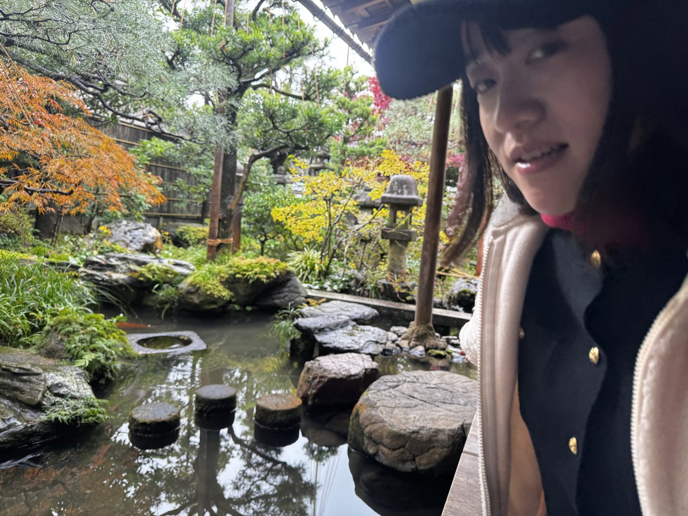

01 · 新橋の夜
Shimbashi Night
Kimono bar-hopping · Evening · about 2.5 h

東京を、ゆりと
As if you were visiting a friend.

01 · 新橋の夜
Kimono bar-hopping · Evening · about 2.5 h

02 · 清澄白河
Museum · garden · lunch · Morning · about 3 h

03 · 神楽坂から新橋へ
& a Shimbashi Evening Hop
Afternoon into evening · Afternoon · about 3.5 h
ゆっくり、座れる


料金はお問い合わせください
Price on requestBookings opening soon